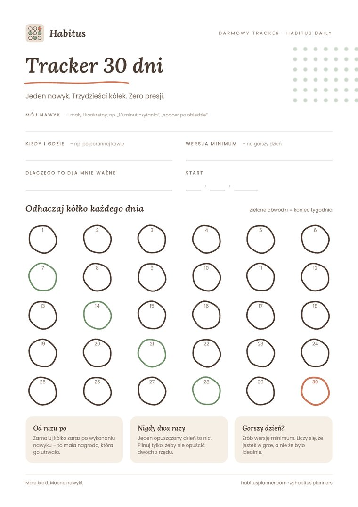

Małe kroki
Jeden nawyk naraz. Zmiana, którą da się utrzymać, jest lepsza od rewolucji na tydzień.
Planery · Dzienniki · Workbooki
Planery, dzienniki i workbooki, które pomagają budować dobre nawyki – oparte na wiedzy psychologicznej, zaprojektowane z myślą o codziennym życiu.
PDF do druku od 19 zł · plik od razu po zakupie
Mój nawyk
10 minut czytania dziennie
12/30
Kliknij kółko, żeby odhaczyć dzień. dziś
Poznaj Habitus
Zobacz, jak działają nasze planery, jakie mamy linie produktów i od czego najlepiej zacząć.
Prezenter w filmie został wygenerowany przez AI (HeyGen).
W co wierzymy
Naszą misją jest sprawić, by praca nad sobą była przyjemna, uporządkowana i realistyczna – bez presji, za to z widocznym postępem.
Jeden nawyk naraz. Zmiana, którą da się utrzymać, jest lepsza od rewolucji na tydzień.
Każdy produkt opiera się na tym, co psychologia wie o motywacji i nawykach.
Nie oceniamy i nie straszymy. Gorszy dzień to część drogi, nie porażka.
Odhaczone dni składają się w obraz zmiany – i to on motywuje najbardziej.
Produkty
nawyki i codzienność
sport amatorski
czytanie i rozwój
PDF od 19 zł · pakiety do 79 zł · druk 59 zł
Jak to działa
Nawyki, sport albo czytanie – zacznij od tego, co dziś jest dla Ciebie najważniejsze.
PDF dostajesz od razu po zakupie, wersję drukowaną wysyła Amazon.
Krótkie ćwiczenia i prosty plan na start, bez listy dwudziestu postanowień.
Tracker pokazuje postęp. Każdy dzień to kolejny ✓ – i powód, żeby jutro zrobić następny.
Nasza historia
Habitus założył psycholog z wykształcenia, który na co dzień pracuje z ludźmi. Każdego dnia widział to samo: ambitne postanowienia, które po dwóch tygodniach znikały – nie z braku chęci, ale z braku prostego systemu.
Zamiast kolejnej aplikacji z powiadomieniami postanowił stworzyć coś spokojniejszego: papierowe i cyfrowe narzędzia, które łączą to, co psychologia wie o nawykach, z przyjemnością odhaczania kolejnych dni.

habitus
łac. · rzeczownik
stan, nawyk, usposobienie – to, kim się stajemy przez to, co robimy codziennie.
Habitus w 30 sekund
Krótki film o tym, czym jest Habitus i dlaczego zaczynamy od jednego nawyku.
Pytania
Link do pobrania pojawia się od razu po zakupie i trafia na Twój adres e-mail. Plik możesz pobierać wielokrotnie.
Tak. Planery są przygotowane do druku na zwykłej domowej drukarce. Możesz też wypełniać je na tablecie w aplikacji do notatek.
Właśnie dla Ciebie. Habitus nie zakłada perfekcji – zaczynasz od jednego nawyku, a gorszy dzień jest wpisany w plan.
Tak, wybrane planery i dzienniki są dostępne jako książki drukowane na Amazonie (wysyłka bezpośrednio od Amazonu).
Pobierz za darmo tracker 30 dni w PDF – jedna strona, jeden nawyk, trzydzieści kółek do odhaczenia. Na drugiej stronie znajdziesz krótką instrukcję i miejsce na cotygodniowe podsumowanie.

Za darmo